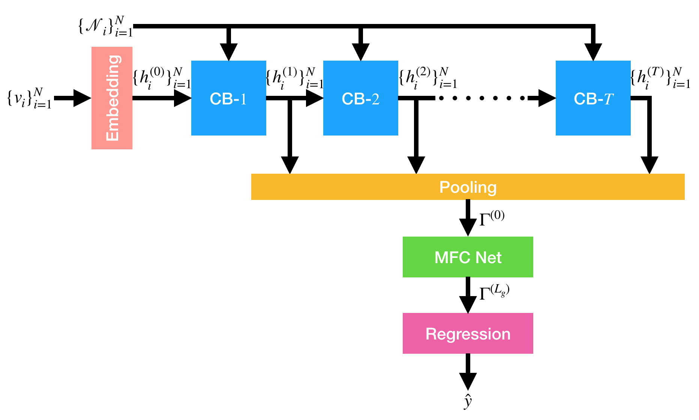
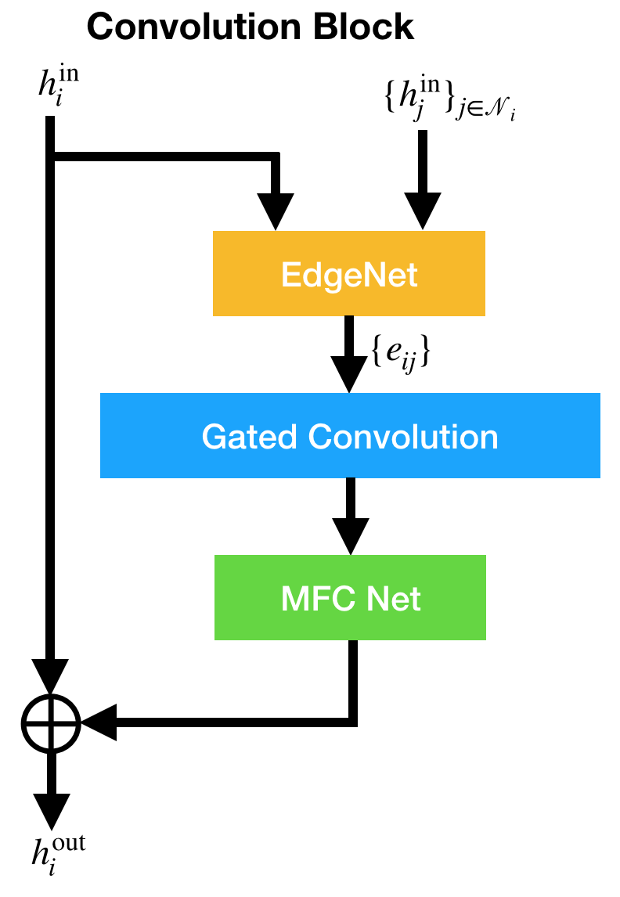
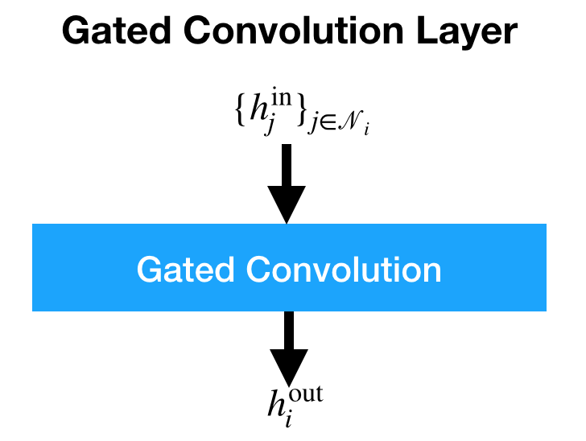
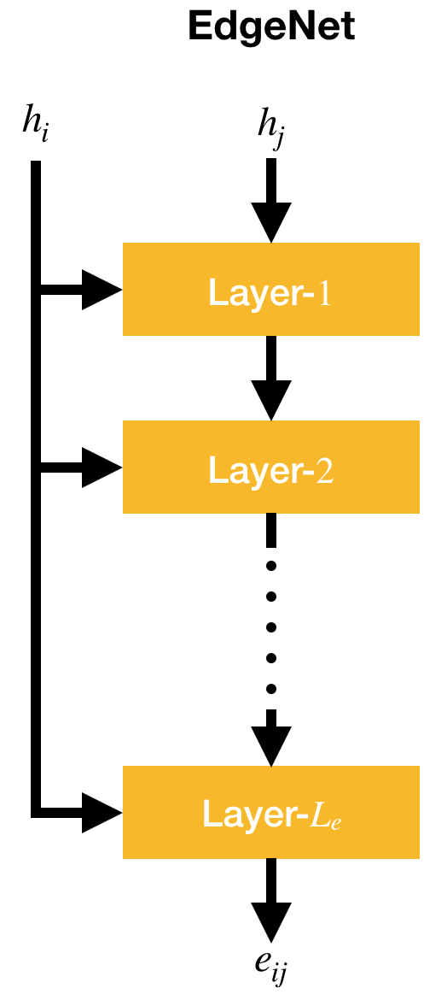
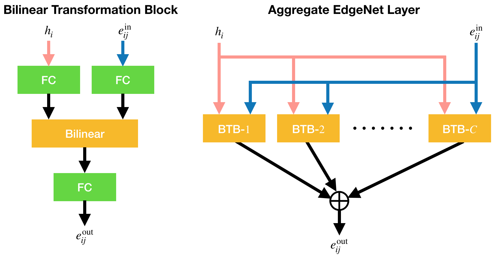
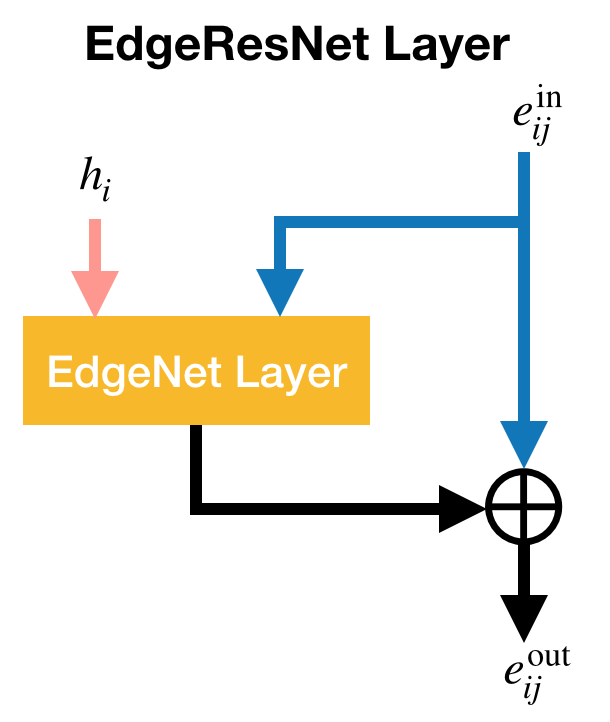

Architectures¶
Embedding¶
The i-th initial hidden state h_{i}^{(0)} \in \mathbb{R}^{d_{h}} is given by the embedding of the i-th node state v_{i} using the embedding matrix E \in \mathbb{R}^{d_{v} \times d_{h}}. The hidden states \{ h_{i}^{(t)} \}_{t=1}^{T} are sequentially produced by stacked convolution blocks (CB), as shown in the figure of a CGNN architecture below.

Convolution Block¶
The CB is composed of an edge neural network (EdgeNet), a gated convolution layer, and a multi-layer fully connected neural network (MFCNet), as shown below.

The EdgeNet produces edge states e_{ij} \in \mathbb{R}^{d_{e}}. The CB output h_{i}^{\rm out} is the sum of the shortcut state h_{i}^{\rm in} and the MFCNet output. The EdgeNet and MFCNet are optional components.
Multilayer Fully Connected Neural Networks¶
The MFCNet is composed of L_{c} layers, each of which is given by
where W_{c} \in \mathbb{R}^{d_{h} \times d_{h}} denotes a weight matrix, and f(\cdot) denotes an activate function.
In neural network components presented below, f(\cdot) appears repeatedly but is not needed to be the same activation function.
Gated Convolution¶
For i-th hidden state, given a sequence of vectors \{ h_{j}^{\rm in} \}_{j \in \mathcal{N}_{i}}, where h_{j}^{\rm in} \in \mathbb{R}^{d_{c}} is either a hidden state (d_{c}=d_{h}) or an edge state (d_{c}=d_{e}), the CB outputs h_{i}^{\rm out} \in \mathbb{R}^{d_{h}}, as shown below.

The h_{i}^{\rm out} is given by
where W_{cg} \in \mathbb{R}^{d_{c} \times d_{h}} and W_{ch} \in \mathbb{R}^{d_{c} \times d_{h}} denote weight matrices, \sigma(\cdot) denotes the sigmoid function, and \odot element-wise multiplication.
Edge Neural Networks¶
The EdgeNet is a multi-layer neural network composed of L_{e} layers, as shown below.

Given i-th hidden states h_{i} and j-th hidden state h_{j} where j \in \mathcal{N}_{i}, the EdgeNet outputs an edge state e_{ij} \in \mathbb{R}^{d_{e}}.
Three variants of the EdgeNet layer are presented below.
Original EdgeNet Layer¶
The EdgeNet layer first developed, as shown below, is made of a bilinear transformation.

It is expressed as $$ e_{ij}^{\rm out} = f(\mathcal{B}(h_{i}, e_{ij}^{\rm in})), $$
and the bilinear transformation \mathcal{B}(\cdot,\cdot) is defined by
where B is a weight tensor of order 3.
Fast EdgeNet Layer¶
The second EdgeNet layer is a fast version of \mathcal{B}(\cdot,\cdot), and is composed of two fully connected layers and the element-wise multiplication, as shown below.

In the fast EdgeNet layer, the weight tensor is decomposed as
where W_{he} and W_{ee} denote weight matrices. Then, this layer is expressed as
Moreover, the activation can be applied just after the two linear transformations, as expressed by
Aggregate EdgeNet Layer¶
The last EdgeNet layer is based on aggregated transformations \sum_{l=1}^{C} \mathcal{T}_{l}(h_{i}, e_{ij}^{\rm in}), where C is the cardinality, and \mathcal{T}_{l} is a bilinear transformation block (BTB), as shown below.

As shown in the left panel of the figure above, \mathcal{T}_{l} is given by
where \mathcal{B}_{l} denotes a bilinear transformation \mathbb{R}^{d_{b}} \times \mathbb{R}^{d_{b}} \to \mathbb{R}^{d_{b}} (d_{b} \cdot C \approx d_{e} under normal use), and W_{hb} \in \mathbb{R}^{d_{h} \times d_{b}}, W_{eb} \in \mathbb{R}^{d_{e} \times d_{b}}, and W_{be} \in \mathbb{R}^{d_{b} \times d_{e}} denote weight matrices.
As shown in the right panel, the aggregate EdgeNet layer outputs
Edge Residual Neural Networks¶
The EdgeNet becomes a residual neural network when every EdgeNet layer is wrapped by the EdgeResNet layer, as shown below.

where W_{s} denotes a weight matrix, and \mathfrak{E}(\cdot, \cdot) an EdgeNet layer.
Pooling¶
The graph-level representation \Gamma^{(0)} \in \mathbb{R}^{d_{h}} is made from all the hidden states \{ h_{i}^{(t)} \}_{t=1,i=1}^{T,N} except for the initial ones. At each step t, the hidden states \{ h_{i}^{(t)} \}_{i=1}^{N} are pooled with the gating mechanism as
where W_{\gamma}^{(t)} \in \mathbb{R}^{d_{h} \times d_{h}} denotes a weight matrix, and b_{\gamma}^{(t)} \in \mathbb{R}^{d_{h}} a bias vector. If the gating mechanism is not used, they are simply averaged as
Then, the graph-level states \gamma_{1},\ldots,\gamma_{T} are weightedly averaged as
where W_{\Gamma}^{(t)} \in \mathbb{R}^{d_{h} \times d_{h}} denotes a weight matrix. If only the final graph-level state \gamma_{T} is used, it is simply activated as
Graph-Level Neural Networks¶
The graph-level MFCNet is composed of L_{g} layers, each of which outputs \Gamma^{\rm out} \in \mathbb{R}^{d_{g}} given by
where W_{g} denotes a weight matrix, and b_{g} \in \mathbb{R}^{d_{g}} a bias vector. For the first layer \Gamma^{\rm in} = \Gamma^{(0)} and W_{g} \in \mathbb{R}^{d_{h} \times d_{g}} , and otherwise \Gamma^{\rm in} \in \mathbb{R}^{d_{g}} and W_{g} \in \mathbb{R}^{d_{g} \times d_{g}}.
The final layer's output \Gamma^{(L_{g})} is used as the input vector for the linear regression
where w_{r} \in \mathbb{R}^{d_{g}} denotes a weight vector, and b_{r} \in \mathbb{R} a bias scalar.
Given true values Y = \{ y_{i} \}_{i=1}^{N} and predicted values \hat{Y} = \{ \hat{y}_{i} \}_{i=1}^{N}, the mean squared error is calculated by
which serves as the loss function for training a CGNN model. The mean absolute error (MAE) is also calculated by
which is used as the validation metric to determine the best model in training. The root mean squared error \sqrt{L(Y, \hat{Y})} is employed as an evaluation metric in testing as well as the MAE.